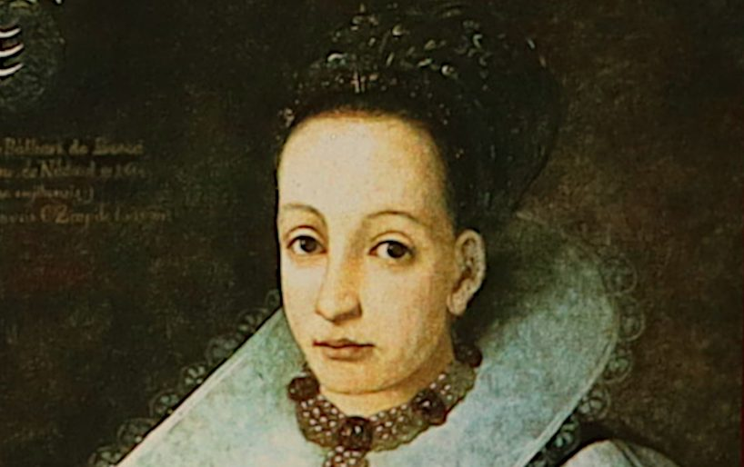

Meta-Commentary: There is a lot I could have done with Lore and the story of Elizabeth Bathory. For instance, due to time passing the records of the trial and motivation of Bathory’s crimes are questionable as overtime rumours and myths have been perpetuated into absolute truth. Nonetheless, it has been suggested that the Countess is simply a victim of the patriarchy, that her alleged crimes were a ploy for removing an independent woman from a position of power. Historically, this makes sense as at the time the King of Hungary was jealous of a woman in power and in debt to the Bathory’s, thus he seized the opportunity of a noble's death in order to remove Elizabeth from power. Rumours of witchcraft and multiple lovers (perhaps even female ones) surrounded the Countess. Perhaps the openness of her relations and her independent power threatened Patriarchal beliefs? There is also a lot of opportunity for a Marxist approach as class plays a large part in the investigation and trial of Elizabeth Bathory. Similarly, psychoanalysis would also be interesting as Elizabeth clearly displays issues with mental health, especially with the fixation of blood.
See research on Docs